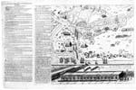
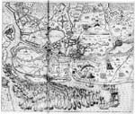
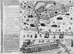
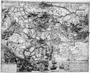
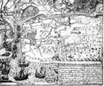
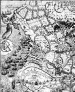

OOSTENDE VERLOREN, SLUIS GEWONNEN, 1604
Tentoonstelling in de Universiteitsbibliotheek van 12 augustus - 12
september 2004
Samenstelling: Dirk de Vries
Met bijdragen van Charles van den Heuvel, Anton van der Lem en Piet Lombaerde
Beeldkroniek1
1 Hogenberg I, 1604
SLVYS. - Frankfurt a. M. : Hogenberg, 1604. - Ets en gravure, 22 x 30 cm.
Titel midden boven, zonder omlijsting. Niet gesigneerd, noch gedateerd. Zonder schaalaanduiding. Zuid boven. Legenda rechtsboven, zonder omlijsting: A De soutdyck doorgesteken | B Batery op de oost syde | C Batery opt punt van casant | D Een kreke daer wel 200 | soetelaars schepen leggen. Onder de prent toelichtende tekst in gravure, in 3 kolommen van elk 4 regels: Den 18 mey 1604 is de stad SLVYS berendt va(n) P: MAVRITIVS | [...] Den 30 mey syn die va(n) binne(n) | doende geweest om 1000 slauen vande galeyen, naer Damme te | conuoyeren, dan conden niet deur coomen.
¶ In Hogenberg’s ‘Geschichtsblätter’ zijn twee kaarten opgenomen die de krijgstocht van Maurits van 1604 in beeld brengen. Naast deze, die het beleg van Sluis in engere zin tot onderwerp heeft, toont de onder nummer 7 beschreven kaart het gehele krijgstoneel van noordwestelijk Vlaanderen.
Deze nieuwskaart in vogelvlucht opent de reeks omdat zij de vroegste fase van het eigenlijke beleg toont gedurende de twee laatste weken van mei 1604, met als belangrijkste feit de afgrendeling van de stad. Aan de westzijde is een begin gemaakt met de omsingeling of circumvallatie, aan de oostzijde zorgt een linie van schepen voor de afsluiting, en in een engere cirkel staan rondom de stad de batterijen opgesteld. Het Staatse leger heeft zijn positie in vier quartieren of legerplaatsen ingenomen. De belangrijkste verbindingsweg naar het westen, De soutdyck, is even buiten de Westpoort doorgestoken. Ook is bij D de kreek aangewezen waar de vloot ligt van de zoetelaars of marketenters, die voor de proviandering zorgen. Een prominente plaats neemt midden onder, bij de ingang van het Zwin, het fort Hasegras in, dat op 23 mei in handen van de Staatsen was gevallen.
Ref.: Muller 1213 B, Hellwig nr. 375, niet in Van Stolk. Lit.: de Hullu (1904), pp. 39-59.
Loc.: GA Sluis: ongenummerd; UB Leiden, CollBN P37 N72; Atlas Van Stolk S.1560/115.
 |
Hogenberg I, 1604. |
2 Anoniem I, 1604
Warachtige afconterfeictinge van het belegh van Sluys. - S.l.: s.n., 1604. - Gravure; kaart met prent 39,5 x 41 cm, plaat 40 x 49,5 cm, blad 42,5 x 66 cm. Met twee kolommen tekst in gravure en boekdruk.
Titel boven gegraveerde tekstkolom links van de kaart. Niet gesigneerd, noch gedateerd. Zonder schaalaanduiding, Zuid boven.
De kaart toont de strategische ligging van de stad achter het eiland CASANT, dat omgeven is door het Zwarte Gat en het Zwin. De schansen langs de Brugse vaart zijn aangegeven, evenals de legerkampen van Maurits, Willem Lodewijk, Ernst van Nassau en Van der Noot. Tegen de rechter rand zijn drie ruiterwachten afgebeeld. De vergeefse poging van Giustiniano om met zijn Italiaanse legereenheid de stad tegen het einde van de maand mei nog te provianderen heeft geheel rechtsboven bij nr. 35 nog een plaatsje gekregen.
Onder de kaart is de afbeelding van de stormbrug geplaatst waarvan Prins Maurits, misschien naar eigen ontwerp en met medewerking van Simon Stevin, er twee had laten construeren zonder dat hij die ooit daadwerkelijk voor de bestorming heeft ingezet. Deze prent (9,5 x 41 cm) heeft een eigen titel: Waere afbeeldinge vande stormbruggen gemaeckt by Syne Excellentie voor de Stadt van Sluys […]. De stormbrug is afgebeeld zonder opschrift als van rechts gezien met de stadswal links.
Kaart en prent zijn in één omlijsting gevat. Links daarvan is op dezelfde koperplaat de toelichtende tekst gegraveerd. Geheel links is een strook gemonteerd met daarop dezelfde toelichting, maar dan in het Frans en in boekdruk: VRAYE CONTREFAICTVRE DV SIEGE de l’Escluse.
¶ De omsingeling in het verdronken land aan de zuidzijde is hier al een eind gevorderd, maar tussen het legerkamp van Van der Noot en het fort Coxyde is de toegang nog open. Voor de inhoudelijke datering is een opmerking van de anonieme ikfiguur in de beide toelichtingen op de stormbruggen van belang, waarin echter twee verschillende data worden vermeld. In de Nederlandse tekst luidt het: ‘Ick hebbe dese 2 bruggen gesien den 1. Julij’ en in de Franse versie: ‘J’ay veu cez deux Pontz le I. de Iuing’.
Ref.: Niet in Muller, niet in Van Stolk. Lit.: de Hullu (1904), pp. 39-59; Simoni (2003), pp. 175-179; Zandvliet (2000), pp. 237-238 vermeldt een tweede exemplaar in de British Library te Londen, in de zogenoemde Atlas Beudeker.
Loc.: AvS Rotterdam, S 1600/25; British Library, Map Library, Maps C.9.e.10 (21).
|  | Anoniem I, 1604 (foto Atlas van Stolk). |
3 Van den Keere I, 1604
Afbeeldinge vanden groten tocht in Vlaenderen inde(n) maent van Apreles 1604. Vanden E.M. Hee=ren Staten Generael onder beleyt van syne Pr. Excellentie Mauritius va(n) Nassau met de gelegenheyt der schansen vanden onsen in ingenomen = Pourtraict du grand voyage de Flanderes au Moys Dapurill 1604 […] / Petrus Kaerius caelavit. - Amsterdam : Cornelis Claesz., 1604. - Ets en gravure ; 30 x 35 cm.
Nederlandse en Franse titels in rolwerklijstjes links en rechts tegen de bovenkaderrand, signatuur van de graveur linksonder. Niet gedateerd. Schaalstok: Een Mijl | Scala Milliarium Flandriae & Germaniae (= 7 cm). Zuid boven, windroos. Duitse tekst in boekdruk links van de kaart: Kurtze und grundliche | erzehelung der Machtigen und ubertrefflich= | en [sic!] Armada Schiffen der Mugenden Edl. Herrn Sta- | ten, underm beleit des Hochgeb. Printzen Mauritii | von Nassauw, eindigend met de verwijzing: Was sich weiter zugetragen ist im Buch weitlufftig zu lesen.
¶ Na juli 1601, toen de aartshertogen Isabella en Albrecht het beleg om Oostende geslagen hadden, was het behoud van deze vesting en havenstad voor de Staten-Generaal het centrale thema dat de militaire strategie tot in het voorjaar van 1604 zou bepalen. Met een stevig steunpunt buiten de gesloten tuin van de Republiek kon de oorlog buiten de grenzen worden gehouden. De veldtocht in Vlaanderen van 1604 onder leiding van Maurits, een laatste vertwijfelde poging van de Staten-Generaal om Oostende te ontzetten, liep echter uit op de verovering van Sluis en het verlies van Oostende. Het is deze historische context die licht werpt op de wijze waarop deze kaart is uitgegeven.
Terwijl de strijd in Vlaanderen in volle gang was, verscheen in de zomer van 1604 – zonder vermelding van auteur of uitgever – de Belägerung der Statt Ostende. Iournal, een in het Duits gesteld anoniem verslag in drie delen van het epos van de belegering. Anna Simoni heeft in haar excellente verhandeling ‘The Ostend story’ recentelijk aangetoond hoe het bekende werk van Hendrick van Haestens over hetzelfde thema (1613) zwaar op de letterlijke tekst van een Franse vertaling van de Belägerung leunt.
Het is alleen in de oorspronkelijke, zeer zeldzame, Duitse uitgave dat deze kaart en de volgende als bijlagen met vele andere kaarten zijn opgenomen. De strijd om Sluis krijgt de aandacht in het tweede deel, Iournal. Ander theil, waaraan een kaartenbijlage is toegevoegd onder de titel Appendix. Oder des ander theils des Appendicis Furbildungen und Abcontrofacturen […] bisz auff die gegenwertige Herbst mesz in Septemb. zugetragen haben. Darinnen ein Mappa von Flandern, der Zug Mauriti neben des Landes gelegentheit, die Belägerung, der statt Sluys mit etlichen neuwen Kupferen der statt Ostende.
Er komen dus in dit werk drie kaarten voor met betrekking tot de verovering van Sluis: 1. van Vlaanderen, ook gesigneerd door Pieter van den Keere, 2. van de veldtocht en 3. van de belegering. Over de eerste twee is nog het volgende op te merken, de derde komt hierna, bij nummer 3 onder de aandacht.
De kaart van Vlaanderen is inhoudelijk te algemeen van aard om in deze lijst een plaats te krijgen, maar is om een andere reden van belang. Ze reikt de sleutel aan om de uitgave van de Belägerung aan Cornelis Claesz. te Amsterdam toe te schrijven, waartoe Simoni nog niet was gekomen. Bij nader onderzoek bleek mij namelijk dat deze kaart na 1604 in twee uitgaven van Claesz. is opgenomen: ten eerste in de reeks van losbladige kaarten van de Nederlandse provincies met tekst in boekdruk rondom de afbeelding, en ten tweede in zijn uitgave van Guicciardini’s Description des touts les Pays Bas (1609 en latere uitgaven). Dit was een reden om in de catalogus van uitgaven van Cornelis Claesz. uit 1609 op zoek te gaan naar de Belägerung, die ik daarin dan ook aantrof onder de vermelding van: Belegh van Oostende met alle de Historien ofte vertooghen in Coperen platen tweederley met gheschrift in drie boecken, Hoogduyts. Omdat Claesz. zelf in deze catalogus nadrukkelijk stelt dat hij hierin alleen prenten en kaarten beschrijft waarvan hij zelf de koperplaten bezit, mogen we hem ook als uitgever van de Belägerung aanwijzen. In deel VII van Schilder’s Monumenta, dat geheel aan de cartografische uitgaven van Claesz. is gewijd, zijn zowel de kaart van Vlaanderen als de catalogus van 1609 als illustraties opgenomen.
De tweede kaart is de onderhavige Afbeeldinge vanden groten tocht, waarbij het accent van de afbeelding en van de bijgevoegde Duitse tekst in boekdruk ligt op de oversteek van de Armada van ongeveer achthonderd schepen van Vlissingen naar de Vlaamse kust. De eerste landing bij het Zwarte Gat is weliswaar ingezet, maar voor het overige is het Spaanse leger nog sterk aanwezig, zoals te zien is tussen Sluis en de kust. De laatste zin van de toegevoegde tekst legt het verband met de Belägerung: Was sich weiter zugetragen ist im Buch weitlufftig zu lesen. Een los exemplaar berust in de verzameling Zelandia Illustrata van het Zeeuws Genootschap van Wetenschappen. De geografische voorstelling heeft de graveur Van den Keere overgenomen van de grote kaart die Floris Balthasar van de Tocht door Vlaanderen van 1600 had gemaakt.
In: Belägerung von Ostende: Iournal oder eigentlich taglichs Register. Amsterdam: Cornelis Claesz., 1604.
Ref.: Muller 1215Ab, niet in Van Stolk. Lit.: Bodel Nijenhuis (1845), nr. Ib, pp. 320-322; de Hullu (1904), pp. 6-10; van Selm (1987), pp. 217-225; de Ghein (1994), nr. 49; de Vries (1998), nr. 33, p. 54; Zandvliet (2000), pp. 230-234; de Klerk (2002), p. 102, 103; Simoni (2003), pp. 35-59; Schilder (2003), p. 23, afb. 1.29, p. 496-521, in het bijzonder pp. 498-500, 503 en 505.
Loc.: ZA Middelburg, Zel. Ill. III, 13; UB Leiden, in: CollBN 20077 B 6.
|  | Van den Keere I, 1604. |
4 Van den Keere II, 1604
Warachtighe ende eygentlijcke Afbeeldinge van de gelegentheye [!] der Stadt Sluys, ende hoe de selve strengelijck is belegert vande Edel. Mog. Heer. Staten Generaal, onder| tbeleyt van den Doorluchtigen Vorst Mauritius, Prince van Orangien, Grave van Nassau, etc. Mitsgaders het rechte Conterfeytsel vande wonderlijcke Stormbrugghen by syne Excellentie daer gemaect / graveur: Pieter van den Keere [?]. - Amsterdam : Cornelis Claesz., 1604. - Ets en gravure ; 23 x 32,5 cm. Met prent (8,5 x 32,5 cm) en toelichtende tekst in boekdruk, totale afmetingen 31,5 x 44 cm.
Titel in boekdruk staat boven de tekstkolom links van de kaart. Niet gesigneerd, noch gedateerd. Zonder schaalaanduiding. Zuid boven, windroos.
¶ De sterke afhankelijkheid van de hiervoor onder nr. 2 beschreven kaart komt behalve in het kaartbeeld ook tot uitdrukking in de details van de ruiterfiguurtjes met het bijschrift Ruyterwacht en in de combinatie van kaart, prent van de stormbrug en tekst. Voor kaart en prent zijn in dit geval echter twee afzonderlijke koperplaten gebruikt. Een belangrijke inhoudelijke toevoeging, die tevens een iets later stadium in de strijd weergeeft, is de afsluiting van de omsingeling in het zuidoosten, waar de vorige prent nog een hiaat laat zien. Wat de afbeelding van de stormbrug betreft zijn de volgende verschillen te constateren: van links gezien, met de stadswal aan de linkerzijde van de voorstelling, geen eigen titel maar wel een opschrift in het Nederlands op de stormbrug: Dese bruggen sijn 32 deelen (dat is stijf 400 voeten) lang.
Van deze kaart is ook een versie overgeleverd met Duitse tekst en een andere layout, waarin van links naar rechts zijn afgedrukt: een smalle tekstkolom in boekdruk met opschrift Abbildu(n)g der wunderlichen Sturmbruggen, von Ihre Excell. inventirt mit ihren bedeutungen, de hierbij horende prent van de stormbrug (8,5 x 32,5 cm) staand afgebeeld, een tekstkolom in boekdruk met titel van de kaart Warhaffte und eigentliche Abcontrafactur der gelegenheit der Statt Sluys, wie dieselbe ist belägert durch die Mug: Edlen Herrn Staten underm beleit des Durchluchtigen, Hochgebornen Fursten Mauritii Printzen von Vranien, Graffen zu Nassouvv, en ten slotte de kaart zelf, ook staand geplaatst. Bij dit exemplaar is rechts een strook van ca. 1 cm. afgesneden. Deze versie is opgenomen in de eerder genoemde Belägerung der Statt Ostende, waarin ze deel uitmaakt van de reeks van drie kaarten die op het beleg van Sluis betrekking hebben. Twee daarvan zijn gesigneerd door Pieter van den Keere, om welke reden met enig voorbehoud ook deze anonieme kaart aan hem toeschreven mag worden.
In: Belägerung von Ostende: Iournal oder eigentlich taglichs Register. Amsterdam: Cornelis Claesz., 1604.
Ref: Muller 1215Ab, niet in Van Stolk.
Lit.: de Hullu (1904), pp. 39-65 en in het bijzonder noot 45 op p. 95, waar naar deze kaart wordt verwezen; de Vries (1998), nr. 33, p. 54; Simoni (2003), pp. 175-179; Schilder (2003), p. 23, afb. 1.29, p. 496-521, in het bijzonder pp. 498-500, 503 en 505.
Loc.: UB Leiden, CollBN P37 N74 (Nederlandse tekst); UB Leiden, in: CollBN 20077 B 6 (Duitse tekst).
|  | Van den Keere II, 1604 |
5.1 Floris Balthasar, 1604
Typus max. & potentiss. Illustriss. DD. Ordd. Foederatum provinc. classis qua Flandriam petierunt & Casandae appulerunt Ao. 1604. april 25 / FLORIS BALTASER. - Delft : Floris Balthasar, 1604. - Ets en gravure; 40 x 49,5 cm. Met tekst in boekdruk links en onderaan, formaat van het gehele blad 59,7 x 66 cm.
Vroegst bekende staat. Restanten van een oudere, weggewiste, gravure, onder andere ten noordwesten van Aardenburg en ten westen van het legerkamp van Willem Lodewijk, geven aan dat er nog een eerdere staat geweest moet zijn.
Titel over de gehele breedte boven de kaart. Niet gedateerd. Schaalstok midden onder: (4) Leuca Horaria (= 11,3 cm). Zuid boven, windroos midden boven de schaalstok. Auteursvermelding rechts van de schaalstok.
Linksonder in paneel een toelichting op de voorstelling in gravure: Maximae Illustriss. DD. ORDD. Foederat | classis & eiusdem in Casandam appullus | exacta tabula quae simul exhibet quas | hostium munitiones una cu(m) Aerdenburgo | oppido accommode sito sub auspiciis Comitis | Mauritii coeperint quibus in velitationibus | ipsorum miles superior fuerit: Deniq(ue) | quam arcta obsidione urbem Slusam | constrinxerint. Rechtsonder in omlijst paneeltje een Latijns vers in 2 kolommen van elk 8 regels, dat waarschijnlijk aan Grotius mag worden toegeschreven: Cum modo Cattorum veteris invectus arenas | Centena premerat puppe Batavus aquas | I meagens, inquit Neptunus, et haec tua crede [...].
De uitvoerige tekst links van de prent en onderaan is in boekdruk uitgevoerd en begint met een tweede titel: WARACHTIGE | AFBEELDING VANDE BE- | LEGHERING VANDE WIIT VER- | MAERDE STERCKE STADT VAN SLVYS, SO | die beleghert is van zijn Excellentie Mauritius van Nassovven, | met den Leger vande E.M. Heeren Staten generael der | vereenichde Provincien, ANNO 1604. In de daaropvolgende toelichting is de laatste datum waaraan gerefereerd wordt den sevensten Augusti, de dag van de aanval op het kamp van Graaf Willem Lodewijk van Nassau. Daarop sluit de legenda aan, waarin de in de prent geplaatste nummers 1 t/m 33 worden verklaard. De laatste in de prent verbeelde handeling vinden we bij nummer 33: Hier werde den vyandt gheslagen, den 26 dito [= mei] als hij de stadt van Sluys meente te victalieren. Onder de prent wordt in vier kolommen het verhaal van de invasie en het beleg tot en met eind mei nog eens verteld, dat begint met Tot den leser en met het adres van de graveur en uitgever afsluit: Dese Caerten vint men te coop by Floris Balthazarssz Plaetsnijder | woonende inde Choorstraat tot Delff, Anno 1604.
Dat de opdracht aan de Staten-Generaal op deze vroegst bekende staat nog ontbreekt, zou te maken kunnen hebben met het feit dat Balthasar naar zijn eigen oordeel medio augustus 1604 nog te weinig door de Heren Staten was beloond. Enkele maanden later, toen hem achter elkaar honderd daalders, tweehonderd gulden en nog eens honderd daalders aan vergoedingen werden uitgekeerd, is de gegraveerde toelichtende tekst linksonder vervangen door een welluidende opdracht aan stadhouder en Staten-Generaal, zoals de tweede staat laat zien (nr. 5.1).
¶ Prins Maurits, die kort voor 1600 de aanzet had gegeven voor de opleiding van militaire ingenieurs en landmeters aan de Leidse universiteit, had een meer dan gewone belangstelling voor landmeetkundige techniek en kaarten. Bovendien gaf de oorlog, waarin hij sinds 1590 roemrijke successen had behaald, een belangrijke impuls aan het landmeetkundig en cartografisch bedrijf. Kaarten bleken niet alleen voor het plannen van militaire operaties onmisbaar te zijn, maar konden ook als propagandamiddel, als eerbetoon en voor het vastleggen van de contemporaine geschiedenis dienst doen.
Floris Balthasar (1562/1563-1616) noemde zich ‘Delphensis’ en kwam dus uit de stad waar Maurits’ vader ooit geresideerd had. Van origine goudsmit, heeft hij vooral bekendheid gekregen als landmeter, cartograaf, graveur en drukker van en handelaar in prenten. Hij kwam kort voor 1600 in contact met een kleine kring rond Prins Maurits, waartoe Stevin, Grotius en Van Oldenbarnevelt gerekend mogen worden, bij wie het inzicht was gegroeid dat kaarten een functionele betekenis kunnen hebben voor beleid en bestuur, zeker in oorlogstijd. Dat contact groeide uit tot een plan om de roemrijke overwinningen van de prins en andere glorieuze feiten uit de periode 1601 tot 1609 in plaat en tekst vast te leggen, een plan dat overigens niet volgens de oorspronkelijke opzet is uitgevoerd (zie verder bij nr 15., Orlers). Een ander product van deze samenwerking was een reeks van voorname prenten op groot formaat, waaraan zowel Balthasar’s naam als maker en graveur verbonden is, als die van Grotius vanwege de toegevoegde puntdichten: onder andere de grote Tocht door Vlaanderen (1600), de Slag bij Nieuwpoort (1600) en de belegeringen van Grave (1602) en van Oostende (1603-1604). Floris Balthasar, die vaker met het leger optrok en hier vier jaar eerder de Tocht door Vlaanderen had meegemaakt, heeft ook als ooggetuige de gegevens voor de hier besproken beeldrapportage ter plaatse verzameld.
De topografische ondergrond van het beeldverhaal heeft Balthasar met een veel speelser lijnvoering dan in het voorbeeld overgenomen van zijn plaat van de Tocht door Vlaanderen van vier jaar eerder. In de presentatie van het historisch relaas heeft hij op een te klein oppervlak te veel willen weergeven, zodat de onmetelijk rijke beeldinformatie op het eerste gezicht onleesbaar overkomt.
De kaart toont de noordwestelijke hoek van Vlaanderen, waarop de krijgshandelingen van de aanval van Maurits in het voorjaar en de zomer van 1604 in drie fasen zijn verbeeld: 1. de landing van de vloot in de Zwarte Gatse kreek en van het leger op het eiland Cadzand, 2. de veldtocht door het Oost Vrije vanaf de uitvalsbasis Cadzand via Coxijde, de Cathelijne schans richting IJzendijke, het beleg van deze vesting, de tocht met de ruiterij naar Aardenburg, aangevoerd door Sijn Ex. te paard, de tegenaanval van de aartshertogen bij Lapscheure en ten slotte de mislukte aanval van de Spaanse ruiterij op het legerkamp van Willem Lodewijk met als bijschrift tussen de ladders en gesneuvelde soldaten: den vyant vlucht en(de) worp syn Reetschap wech als sijn anslach failleerde. De nummers 1-33, die naar de legenda in boekdruk verwijzen, worden ten overvloede ook nog eens met bijschriften in de kaart verklaard, zoals 1 De vloot lant Hier meest, 2 TLEGER LANT HIER. Nummer 24 treffen we aan bij IJzendijke, 30 bij Aardenburg en Heille: De Slachorder die Sijn Ex. nam als Hij, den 16 meij den vijnt hier slooch ten slotte 34 bij morolle gat.
Ref.: Muller 1210; Hollstein vol. II, Floris Balthasar nr. 9. Lit.: Bodel Nijenhuis 1845, nr. VII, p. 329-331; de Hullu (1904); Eijffinger (1978); Zandvliet (1989), pp. 19-20, 27-31; Zandvliet (2000), pp. 79-83, 230-238.
Loc.: RPK Amsterdam, FM 1210.
5.2 Floris Balthasar, 1604
Typus insignis Illustriss. DD. Ordd. Foederatum. provinc. classis. qua Flandriam petierunt & Casandam appulerunt Ao. 1604. april. 25 / FLORIS BALTASER […] . - Ets en gravure; 40 x 49,5 cm.
Tweede staat. Bij dit exemplaar uit de Collectie Bodel Nijenhuis ontbreekt de uitvoerige toelichting in letterdruk.
De eerste woorden van de Latijnse titel boven de plaat zijn gewijzigd. In plaats van de toelichting is hier in het paneeltje linksonder de opdracht van negen regels aan de Staten-Generaal en prins Maurits geplaatst: Excellentissimis D.D. Ordinibus federatae Belgicae, et | Illustrissimo D. Mauritio Nassavio Principi Aurasiorum | delineationem hanc rerum in Flandria gestarum, huius | ductu, illorum aupiciis [!], exscensum classis in Cadsantam | insulam, capta mox hostium munimenta et maximum eorum | Isendicum, oppidumq(ue) Ardenburgum, praelia deinde, et nobi- | lissimam obsidionem trimestrum, qua urbs Slusa fame in | potestatem redacta est, dedicat Florentius Balthaza- | rius Delphensis. Linksboven is de figuur van de FAMA toegevoegd, die twee trompetten steekt met vaandels waarop de Oranjeboom en het wapen van de Zeven Provinciën zijn afgebeeld.
¶ Na de verovering van de stad op 19 augustus 1604 heeft Floris Balthasar zijn nieuwskaart aangepast door een opdracht toe te voegen, waarin aan dat heugelijk feit wordt gerefereerd en waarin dat ook door vrouwe Faam wereldkundig wordt gemaakt: qua urbs Slusa fame in potestatem redacta est.
Lit.: zie onder nr. 5.1.
Loc.: UB Leiden, CollBN P37 N50.
|

|

|

Floris Baltasar I, 1604 (detail). |
| vorige pagina | volgende pagina |